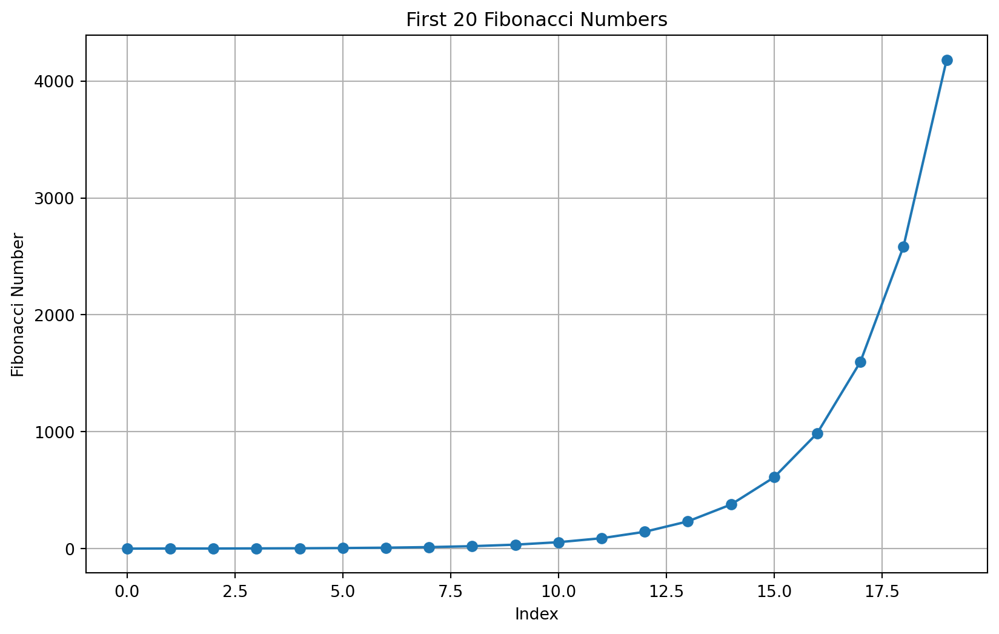
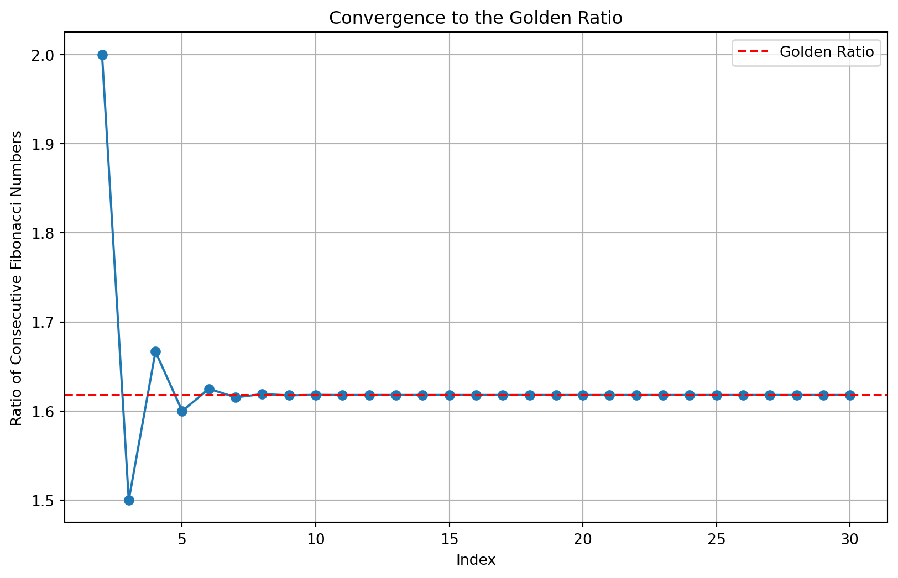

The Art of Recursion: Unraveling the Fibonacci Sequence
Programming
Mathematics
Algorithms
Author
Arden Vairsilo
Published
July 21, 2024
Introduction
Recursion is a fundamental concept in programming that often intimidates beginners but fascinates seasoned developers. It’s a technique where a function calls itself to solve a problem by breaking it down into smaller, more manageable pieces. One of the most elegant applications of recursion is in generating the Fibonacci sequence, a series of numbers that has captivated mathematicians, artists, and nature enthusiasts for centuries.
In this post, we’ll explore the Fibonacci sequence, understand its mathematical beauty, and implement it using recursive and iterative approaches in Python. We’ll also visualize the sequence and discuss its real-world applications, bridging the gap between programming, mathematics, and nature.
The Fibonacci Sequence: Nature’s Code
The Fibonacci sequence is a series of numbers where each number is the sum of the two preceding ones. It typically starts with 0 and 1, and the sequence continues as 0, 1, 1, 2, 3, 5, 8, 13, 21, and so on. Mathematically, it can be defined as:
F(n) = F(n-1) + F(n-2)
Where F(0) = 0 and F(1) = 1
This simple rule creates a sequence with fascinating properties and numerous applications in various fields, from computer algorithms to financial markets, and even in understanding the growth patterns in nature.
Implementing Fibonacci: Recursion vs. Iteration
Let’s implement the Fibonacci sequence using both recursive and iterative approaches in Python.
Recursive Implementation
def fibonacci_recursive(n):# Base casesif n <=0:return0elif n ==1:return1# Recursive caseelse:return fibonacci_recursive(n-1) + fibonacci_recursive(n-2)# Test the functionprint([fibonacci_recursive(i) for i inrange(10)])
[0, 1, 1, 2, 3, 5, 8, 13, 21, 34]
This recursive implementation is elegant and closely mirrors the mathematical definition. However, it has a significant drawback: it recalculates the same values multiple times, leading to exponential time complexity O(2^n).
Iterative Implementation
def fibonacci_iterative(n):if n <=0:return0elif n ==1:return1 a, b =0, 1for _ inrange(2, n+1): a, b = b, a + breturn b# Test the functionprint([fibonacci_iterative(i) for i inrange(10)])
[0, 1, 1, 2, 3, 5, 8, 13, 21, 34]
The iterative approach is more efficient, with a time complexity of O(n). It avoids redundant calculations by storing and updating only the two most recent values.
Visualizing the Fibonacci Sequence
To better understand the growth of the Fibonacci sequence, let’s visualize it using matplotlib.
import matplotlib.pyplot as pltdef plot_fibonacci(n): fib_numbers = [fibonacci_iterative(i) for i inrange(n)] plt.figure(figsize=(10, 6)) plt.plot(range(n), fib_numbers, marker='o') plt.title(f"First {n} Fibonacci Numbers") plt.xlabel("Index") plt.ylabel("Fibonacci Number") plt.grid(True) plt.show()plot_fibonacci(20)

This plot illustrates the exponential growth of the Fibonacci sequence. As we increase the index, the values grow rapidly, showcasing the sequence’s explosive nature.
The Golden Ratio and Fibonacci
One of the most intriguing aspects of the Fibonacci sequence is its relationship to the Golden Ratio, approximately 1.618033988749895. As we progress further in the sequence, the ratio of consecutive Fibonacci numbers converges to the Golden Ratio.
Let’s visualize this convergence:
def plot_golden_ratio_convergence(n): fib_numbers = [fibonacci_iterative(i) for i inrange(2, n+2)] ratios = [fib_numbers[i] / fib_numbers[i-1] for i inrange(1, len(fib_numbers))] plt.figure(figsize=(10, 6)) plt.plot(range(2, n+1), ratios, marker='o') plt.axhline(y=(1+5**0.5) /2, color='r', linestyle='--', label='Golden Ratio') plt.title("Convergence to the Golden Ratio") plt.xlabel("Index") plt.ylabel("Ratio of Consecutive Fibonacci Numbers") plt.legend() plt.grid(True) plt.show()plot_golden_ratio_convergence(30)

This visualization demonstrates how quickly the ratio of consecutive Fibonacci numbers approaches the Golden Ratio, represented by the red dashed line.
Real-World Applications
The Fibonacci sequence and its related concepts have numerous applications:
Nature: The spiral arrangement of leaves on some plants and the branching of trees often follow Fibonacci patterns.
Art and Architecture: The Golden Ratio, derived from the Fibonacci sequence, is used in compositions to create aesthetically pleasing designs.
Financial Markets: Some traders use Fibonacci retracements as a technical analysis tool.
Computer Algorithms: The sequence is used in the Fibonacci heap data structure, which is crucial for implementing efficient graph algorithms.
Music: Some composers use Fibonacci numbers to determine the number of measures or to create rhythms.
Conclusion
The Fibonacci sequence serves as a beautiful example of how a simple mathematical concept can have profound implications across various disciplines. From the recursive nature of its definition to its manifestation in the natural world, it continues to inspire mathematicians, programmers, and artists alike.
As we’ve seen, implementing the Fibonacci sequence allows us to explore different programming paradigms, algorithm efficiency, and data visualization. It also provides a gateway to understanding more complex mathematical concepts and their applications in the real world.
The next time you see a spiral in nature or hear about the Golden Ratio in art, remember the humble Fibonacci sequence and the elegant recursion that defines it. It’s a testament to the interconnectedness of mathematics, nature, and human creativity.
References
Knuth, D. E. (1997). The Art of Computer Programming, Volume 1: Fundamental Algorithms (3rd ed.). Addison-Wesley Professional.
Livio, M. (2008). The Golden Ratio: The Story of Phi, the World’s Most Astonishing Number. Crown.
Sedgewick, R., & Wayne, K. (2011). Algorithms (4th ed.). Addison-Wesley Professional.